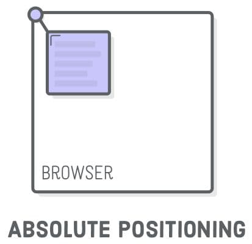
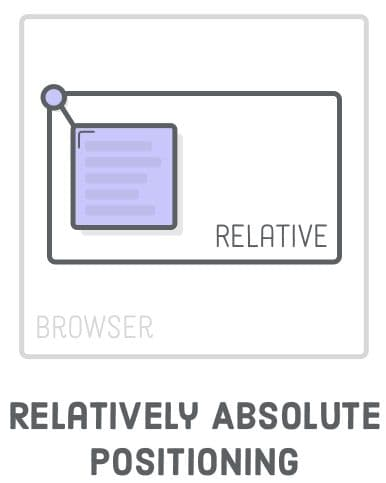

Pozycjonowanie absolutne (bezwzględne)
W przypadku pozycjonowania bezwzględnego element jest wyciągany z
przepływu strony, to znaczy sąsiednie elementy zajmują jego
miejsce. Wartości top, left, bottom i right dla elementu
pozycjonowanego bezwzględnie są liczone względem najbliższego
przodka z pozycjonowaniem innym niż statyczne (szukamy
najbliższego elementu który ma np. position: relative i względem
jego pozycjonujemy). Jeśli nie ma takiego przodka, to liczenie
zostanie wykonane od granic elementu "body".

Samo pozycjonowanie bezwzględne nie jest zbyt użyteczne i jest
używane na przykład w połączeniu z pozycjonowaniem względnym do
dekoracyjnego pozycjonowania elementów. Oznacza to, że element
„bezwzględny” jest pozycjonowany jako „względny” w stosunku do
niektórych swoich przodków, które znajdują się w przepływie stron.

Następnie wartości top, left, right i bottom, dla bezwzględnie
pozycjonowanego elementu są liczone od granic tego przodka, a nie
od "body". Oznacza to, że ustawienie position: relative dla
przodka jest używane wyłącznie w celu umieszczenia elementu
pozycjonowanego bezwzględnie względem tego przodka.
Wpis bottom: 20px oznacza odległość między dolną granicą
pozycjonowanego względnie przodka a dolną granicą elementu
pozycjonowanego bezwzględnie. Podobnie działa right, left i top -
odległość jest ustawiona między stronami o takich samych nazwach
przodka i elementu.
Stwórzmy trzy bloki z obrazem i tekstem w każdym. Ustawmy
div.thumb na pozycjonowanie względne, a p.label na pozycjonowanie
bezwzględne, abyśmy mogli umieścić tekst nad obrazem w tym bloku.
Nie zapomnijmy usunąć z p.label margines (margin), ponieważ wpływa
on na przesunięcie samego elementu, ale nie innych elementów w
przepływie.
Jeśli nie ustawisz względnego pozycjonowania div.thumb, wszystkie
trzy p.label pojawią się w prawym górnym rogu okna, ponieważ
wartości top i right będą odliczane względem elementu "body".